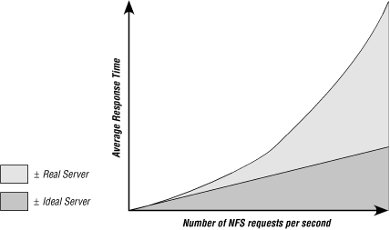

16.2. Measuring performance
The NFS RPC mixture is useful for tuning the server to handle
the
load placed on it, but the real measure of success is whether the
clients see a faster server or not. Users may still get "server
not responding" messages after some bottlenecks are eliminated
because you haven't removed all of the constraints, or because
something other than the server is causing performance problems.
Measuring the success of a tuning effort requires you
to measure the average response time
as seen by an average client. There are two schools of thought on how
to determine this threshold for this value:
-
Use an absolute value for the "threshold of pain" in
average
server response time. The system
begins to appear sluggish as response time approaches 40
milliseconds. As of this writing, typical NFS servers are capable of
providing response times well below this threshold, in the range of
one to ten milliseconds, and they keep getting faster.
-
Base the threshold on the performance of the server with a minimal
load, such as only one client. When the server's performance
exceeds twice this "ideal" response time, the server has
become loaded.
It's easy to measure the average server response time on a
client by dividing the number of NFS RPC calls made by the time in
which they were completed. Use the
nfsstat
utility to track the
number of NFS calls, and a clock or
the Unix
time command to measure the elapsed
time in a benchmark or network observation. Obviously, this must be
done over a short, well-monitored period of time when the client is
generating NFS requests nearly continuously. Any gap in the NFS
requests will increase the average server response time. You can also
use NFS benchmark traffic generators such as the
SPEC
[44] SFS97 RPC-generating
benchmark, or review the smoothed response times recorded by some
versions of
nfsstat -m.
You'll get different average response times for different RPC
mixtures, since disk-intensive client activity is likely to raise the
average
response time. However, it is the
average response that matters most. The first
request may always take a little longer, as caches get flushed and
the server begins fetching data from a new part of the disk. Over
time, these initial bumps may be smoothed out, although applications
with very poor locality of reference may suffer more of them. You
must take the average over the full range of RPC operations, and
measure response over a long enough period of time to iron out any
short-term fluctuations.
Users are most sensitive to the sum of response times for all
requests in an operation. One or two slow responses may not be
noticed in the sequence of an operation with several hundred NFS
requests, but a train of
requests with long response times will
produce complaints of system sluggishness.
An NFS server must be able to handle the traffic bursts without a
prolonged increase in response time. The randomness of the NFS
requests modulates the server's response time curve, subject to
various constraints on the server. Disk bandwidth and CPU scheduling
constraints can increase the time required for the server's
response time to return to its average value.
Ideally, the average response time curve should remain relatively
"flat" as the number of NFS requests increases. During
bursts of NFS activity, the server's response time may
increase, but it should return to the average level quickly. If a
server requires a relatively long time to recover from the burst,
then its average response time will remain inflated even when the
level of activity subsides. During this period of increased response
time, some clients may experience RPC timeouts, and retransmit their
requests. This additional load increases the server's response
time again, increasing the total burst recovery time.
NFS performance does not scale linearly above the point at which a
system constraint is hit. The NFS retransmission algorithm introduces
positive feedback when the server just can't keep up with the
request arrival rate. As the average response time increases, the
server becomes even more loaded from retransmitted requests. A slow
server removes some of the random elements from the network: the
server's clients that are retransmitting requests generate them
with a fairly uniform distribution; the clients fall into lock step
waiting for the server, and the server itself becomes saturated.
Tuning a server and its clients should move the "knee" of
the performance curve out as far as possible, as shown in
Figure 16-1.

Figure 16-1. Ideal versus actual server response
Knowing what to measure and how to measure it lets you evaluate the
relative success of your tuning efforts, and provides valuable data
for
evaluating NFS server benchmarks.
 |  |  |
| 16. Server-Side Performance Tuning |  | 16.3. Benchmarking |